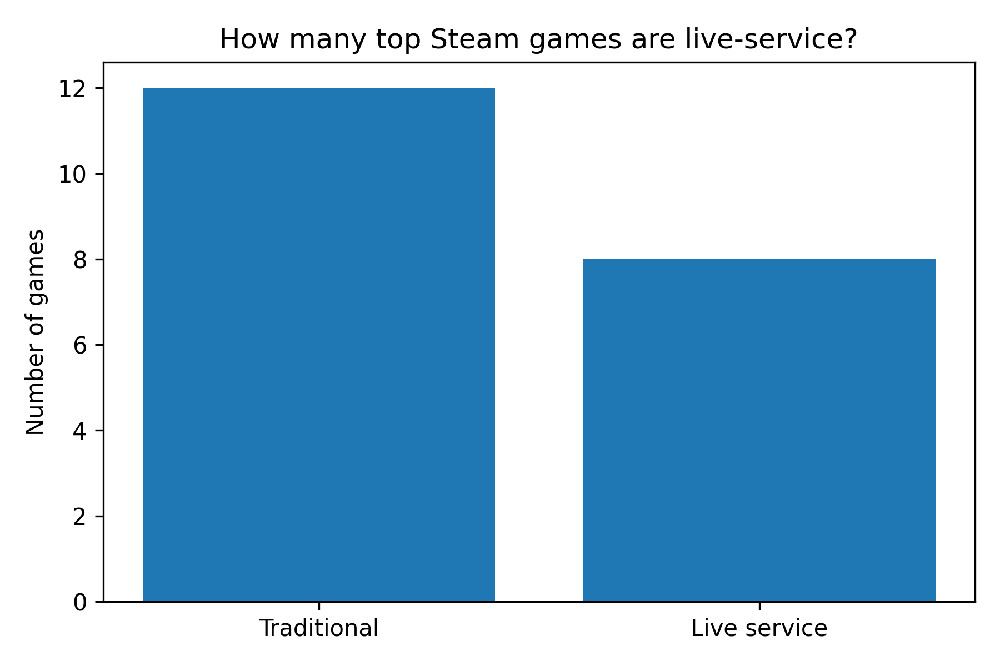
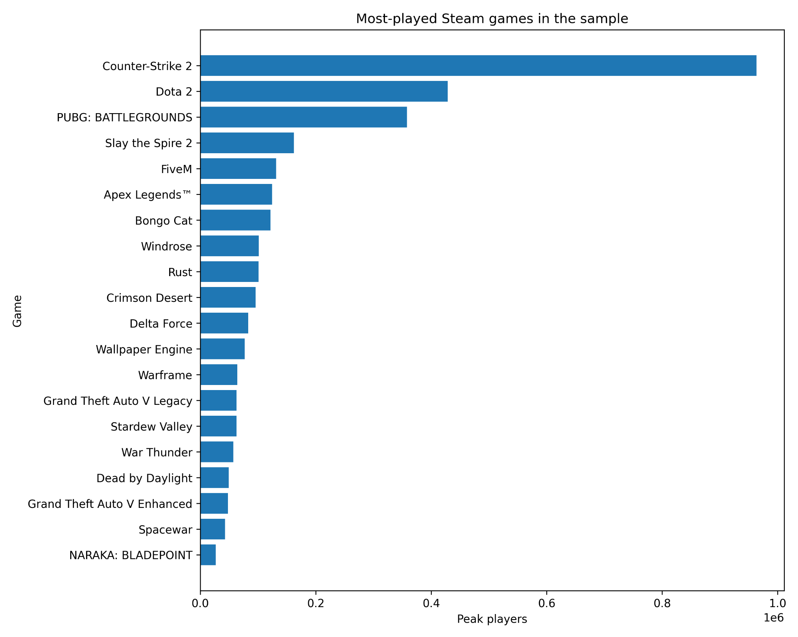
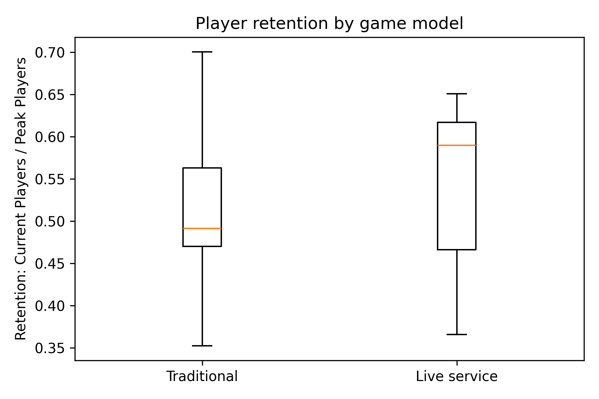

| live_service | games | mean_average_players | median_average_players | mean_peak_players | mean_retention |
|---|---|---|---|---|---|
| Traditional | 12 | 75715 | 62607 | 151149 | 0.507 |
| Live service | 8 | 281740 | 127924 | 524219 | 0.541 |
Live-Service vs Traditional Games: The Modern Gaming Dilemma
Evidence from top Steam games
Games are no longer just products that players buy once and complete. Many of the largest titles now operate as platforms: constantly updated, socially embedded, and designed to keep players returning. This post asks whether that model actually produces stronger player engagement.
Why live-service games matter
The video game industry has changed dramatically over the last two decades. What was once an industry built mainly around one-time purchases has increasingly shifted toward games designed as ongoing services. Today, many major titles use seasonal updates, online multiplayer ecosystems, battle passes, cosmetic stores, subscription services, and regular live events. In this model, games are not just products; they are platforms intended to keep players engaged continuously by manipulating them through FOMO (Fear of missing out).
Player attention has therefore become one of the gaming industry’s most valuable resources. A traditional game may sell millions of copies during launch week, but many players eventually move on once they finish the content. By contrast, live-service games are explicitly designed to encourage long-term engagement through progression systems, social interaction, limited-time events, and constant updates.
I am to compare live-service and traditional games using Steam player data. The analysis combines descriptive statistics with simple regression modelling to evaluate whether live-service games systematically differ from traditional games in terms of player engagement and retention.
From one-time products to ongoing platforms
Early video games in the 1980s and 1990s were constrained by hardware and distribution. Most titles were sold physically on cartridges or discs and were designed as complete experiences from release. Once players purchased a game, they owned the entire product. Multiplayer usually meant local play: friends sharing the same console or computer.
Widespread internet access changed this model. Developers could update games after release, host online servers, and maintain persistent worlds. This created the foundation for the live-service model. Games such as RuneScape (2001) and World of Warcraft (2004) showed that players were willing to pay continuously for games that continuously evolved.
That economic logic is central to the modern gaming industry. Traditional games rely heavily on launch sales. Live-service games generate ongoing revenue through subscriptions, cosmetic purchases, expansions, battle passes, and microtransactions. As a result, modern game design increasingly prioritises retention and engagement rather than only initial sales.
Data and classification
The dataset combines publicly available Steam player information with SteamCharts-style ranking data. The main variables are current active players, peak player counts, historical Steam activity, and game metadata. Each game was manually classified as either a live-service game or a traditional game.
A game is classified as live-service if it contains features such as ongoing seasonal updates, battle passes, persistent online progression, frequent live events, or a long-term multiplayer ecosystem. A game is classified as traditional if it is mainly structured around a one-time purchase or a relatively self-contained gameplay experience.
Evidence 1: Live-service games are a minority of the sample
Within the top 20 most-played Steam games in the sample, only 8 titles are classified as live-service games, while 12 are classified as traditional games.

This matters because the live-service model is often discussed as if it dominates the whole market. In this sample, live-service games are not the majority by count. Their importance comes from their concentration of player activity.
Evidence 2: Player activity is highly concentrated

The distribution of player activity is extremely uneven. Counter-Strike 2 dominates the sample, with Dota 2 and PUBG: Battlegrounds also far ahead of most other games. This suggests a “winner-takes-most” structure: the live-service model can produce enormous success, but that success is concentrated among a small number of dominant titles.
The descriptive statistics support this pattern. Live-service games have a much higher mean current player count than traditional games. The mean for live-service games is about 281,740 players, compared with about 75,715 for traditional games. Median player counts also favour live-service games, though the gap is smaller, which shows that a few extremely successful games pull the live-service average upward.
Evidence 3: Retention is higher, but less clearly so
Player count alone does not fully capture engagement. A game may attract a large audience initially but fail to retain it. To estimate retention, I use the following ratio:
\[ \text{Retention} = \frac{\text{Current players}}{\text{Peak players}} \]

The boxplot suggests that live-service games have somewhat higher retention. The mean retention ratio is 0.541 for live-service games and 0.507 for traditional games. One major reason is the use of recurring engagement systems such as: seasonal updates, collaboration events, cosmetic rewards, strong player feedback taken, social multiplayer ecosystems all built on strong community feedback.
A strong example is Fortnite’s “Astronomical” Travis Scott event in April 2020, which attracted over 27 million unique players across its limited-time concerts.
Thank you to everyone who attended and created content around the Travis Scott event!
— Fortnite (@Fortnite) April 27, 2020
Over 27.7 million unique players in-game participated live 45.8 million times across the five events to create a truly Astronomical experience. 🤯🔥 pic.twitter.com/LSH0pLmGOS
However, the distributions overlap substantially. This means the descriptive difference is suggestive, but not decisive.
Regression analysis
To move beyond descriptive comparisons, I estimate two simple OLS regression models. The first examines whether live-service games are associated with larger active player bases:
\[ \log(\text{Current players}_i) = \alpha + \beta\text{LiveService}_i + \varepsilon_i \]
The second examines whether live-service games are associated with higher retention:
\[ \text{Retention}_i = \alpha + \beta\text{LiveService}_i + \varepsilon_i \]
| Model | Dependent variable | Live-service coefficient | p-value | R-squared | Interpretation |
|---|---|---|---|---|---|
| Model 1 | log current players | 1.000 | 0.006 | 0.348 | Live-service games have much larger active player bases. |
| Model 2 | retention | 0.034 | 0.455 | 0.031 | Live-service games have slightly higher retention, but the result is not statistically significant. |
Because Model 1 uses a logged dependent variable, the live-service coefficient can be interpreted approximately as a percentage difference. A coefficient of 1.000 implies that live-service games have about 172% higher current player counts on average than traditional games. This is statistically significant at conventional levels.
Model 2 tells a different story. The live-service coefficient is positive, but small and statistically insignificant. This means the data does not provide strong evidence that live-service status alone explains better retention.
Interpretation: Scale matters more than retention
The central finding is that live-service games appear much stronger on scale than on retention. They clearly attract and maintain larger active player communities. However, the evidence that they retain a higher proportion of their peak player base is weaker.
This distinction is important. It suggests that live-service success may rely less on a universally superior retention rate and more on network effects, social interaction, continuous content pipelines, and large existing communities. Once a live-service game becomes large, its size becomes part of its appeal: players join because other players are already there.
Traditional games operate differently. Their success is often based on delivering a complete, high-quality experience rather than maintaining constant engagement indefinitely. This does not make them inferior. It means they compete with a different strategy and player base in mind.
Some limitations to consider
There are several limitations to this analysis. First, the classification of live-service games was manually coded, so some borderline cases may be debatable. Second, the regressions should not be interpreted causally. Live-service status is not randomly assigned, and highly popular games may be more likely to adopt live-service mechanics because they already have large audiences. Third, Steam data does not capture the whole gaming market, especially console and mobile gaming. Finally, current players and peak players are imperfect measures of engagement because they cannot fully capture player satisfaction, loyalty, or monetisation.
Conclusion
The gaming industry has increasingly shifted toward live-service models because they create opportunities for continuous engagement and recurring revenue. This analysis finds strong evidence that live-service games maintain significantly larger active player bases than traditional games. However, the evidence that they retain players substantially better is weaker than expected.
The modern gaming dilemma is therefore not simply whether live-service games are more successful. It is whether the industry’s growing focus on continuous engagement changes what games are designed to be: complete experiences, or persistent platforms competing for player attention.
Appendix: regression output
MODEL 1: log_current_players on live_service
OLS Regression Results
===============================================================================
Dep. Variable: log_current_players R-squared: 0.348
Model: OLS Adj. R-squared: 0.311
Method: Least Squares F-statistic: 9.594
Date: Thu, 07 May 2026 Prob (F-statistic): 0.00622
Time: 18:07:14 Log-Likelihood: -20.401
No. Observations: 20 AIC: 44.80
Df Residuals: 18 BIC: 46.79
Df Model: 1
Covariance Type: nonrobust
================================================================================
coef std err t P>|t| [0.025 0.975]
--------------------------------------------------------------------------------
const 11.1214 0.204 54.463 0.000 10.692 11.550
live_service 1.0000 0.323 3.097 0.006 0.322 1.678
==============================================================================
Omnibus: 1.773 Durbin-Watson: 1.940
Prob(Omnibus): 0.412 Jarque-Bera (JB): 1.135
Skew: 0.579 Prob(JB): 0.567
Kurtosis: 2.856 Cond. No. 2.45
==============================================================================
Notes:
[1] Standard Errors assume that the covariance matrix of the errors is correctly specified.
MODEL 2: retention on live_service
OLS Regression Results
==============================================================================
Dep. Variable: retention R-squared: 0.031
Model: OLS Adj. R-squared: -0.022
Method: Least Squares F-statistic: 0.5829
Date: Thu, 07 May 2026 Prob (F-statistic): 0.455
Time: 18:07:14 Log-Likelihood: 19.262
No. Observations: 20 AIC: -34.52
Df Residuals: 18 BIC: -32.53
Df Model: 1
Covariance Type: nonrobust
================================================================================
coef std err t P>|t| [0.025 0.975]
--------------------------------------------------------------------------------
const 0.5074 0.028 18.052 0.000 0.448 0.566
live_service 0.0339 0.044 0.763 0.455 -0.059 0.127
==============================================================================
Omnibus: 0.088 Durbin-Watson: 2.130
Prob(Omnibus): 0.957 Jarque-Bera (JB): 0.267
Skew: -0.121 Prob(JB): 0.875
Kurtosis: 2.488 Cond. No. 2.45
==============================================================================
Notes:
[1] Standard Errors assume that the covariance matrix of the errors is correctly specified.